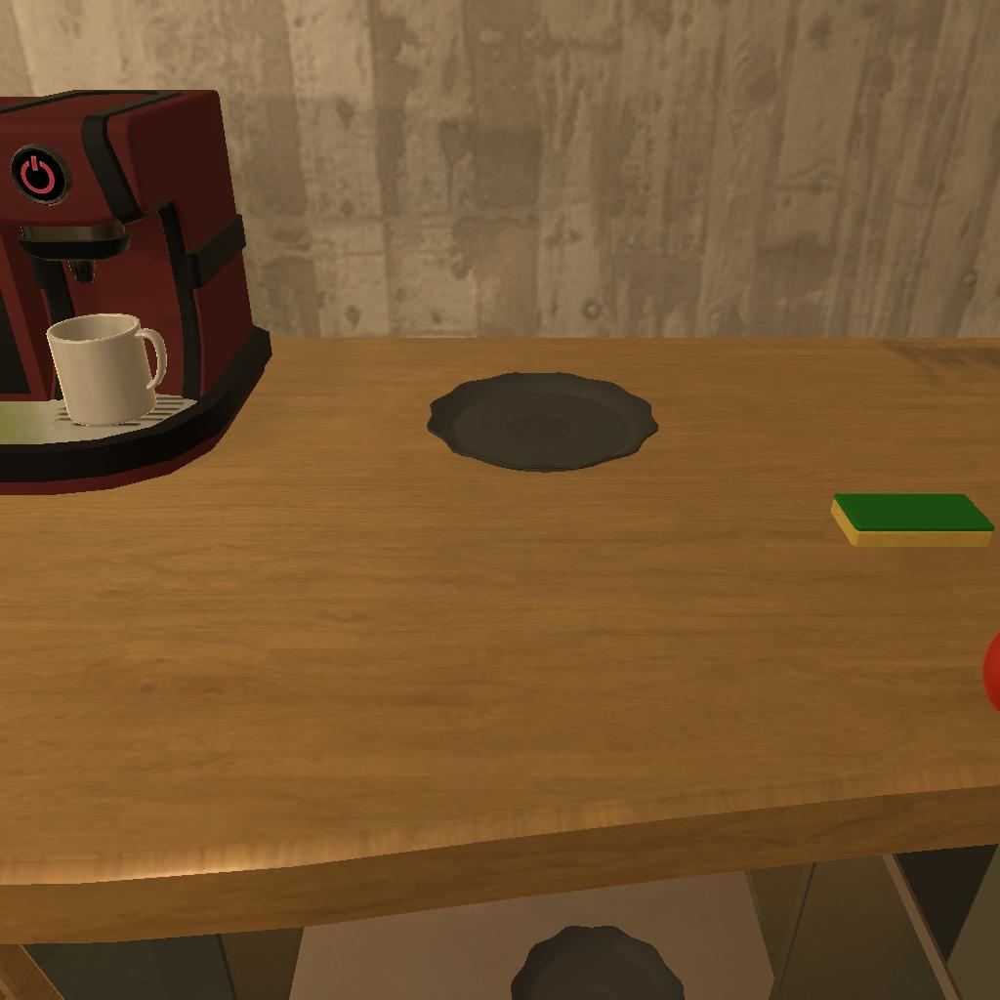

---------------------------------------------------------task: 26---------------------------------------------------------
--------------------------------------------------------------------------------------------------------------------------------------------------------------------
--------------------------------------------------------------------------------------------------------------------------------------------------------------------
Step:--------------------------------------------------------------------------4-------------------------------------------------------------------------------
----------------------------------------
VLM Prompt:
Image1:
Image2:
Image3:
**Instruction**
1. Analyze the provided images to identify all visible household objects and compare the difference between images (e.h. whether the object is opened or not and taken on hand or not), focusing on those relevant to the task description "find two kettle and put them in cabinet."
2. Use the analysis of images and the task hint "The agent must find an object of the desired type, pick it up, find the correct location to place it, put it down there, then look for another object of the desired type, pick it up, return to previous location, and put it down there with the other object." to answer the question: what is the most reasonable action in the choices for the task description "find two kettle and put them in cabinet"?
3. Decide and write the answer using the template: The answer is: (i): , where i is the real number. If there is no desired object in images, search every place based on **Initial Observation** to find the object. And if no one is exactly correct, choose a similar answer.
**Initial Observation**
You are in the middle of a room. Looking quickly around you, you can see countertop (1), coffeemachine (1), cabinet (1-4), drawer (1-8), sink (1), sinkbasin (1), garbagecan (1), fridge (1), microwave (1), dresser (1), sidetable (1)
**Answer Choices**
(1): go to countertop 1
(2): go to coffeemachine 1
(3): go to cabinet 1
(4): go to drawer 1
(5): go to sink 1
(6): go to sinkbasin 1
(7): go to cabinet 3
(8): go to garbagecan 1
(9): go to cabinet 4
(10): go to drawer 2
(11): go to fridge 1
(12): go to microwave 1
(13): go to dresser 1
(14): go to sidetable 1
(15): go to drawer 3
(16): go to drawer 4
(17): go to drawer 5
(18): go to drawer 6
(19): go to drawer 7
(20): go to drawer 8
(21): open cabinet 2
(22): close cabinet 2
(23): examine cabinet 2
**Answer**
Let's think step by step by following the instructions.
----------------------------------------
----------------------------------------
Original Response:
First, we analyze the provided images. In Image1, we can see a coffee machine with a mug on a countertop and what seems to be a round, shadowy spot that could indicate where an object (possibly a kettle) was sitting before. No kettles are visible. In Image2 and Image3, which are identical, we can see a sink, countertop, knife, and some vegetables, but again, no visible kettles.
Based on the initial observation, we should look for kettles in places where they are likely to be stored, such as cabinets or drawers. The task description is to find two kettles and put them in a cabinet. Since we do not see any kettles on the countertops or near the coffee machine, we can rule out actions (1) and (2).
The next logical step would be to search the cabinets and drawers, as kettles are not typically stored in sinks, sink basins, garbage cans, fridges, microwaves, dressers, or side tables. Cabinet 2 is already open in Image1, and no kettle is visible there, so we can rule out actions (21), (22), and (23).
The most reasonable next actions would be to check inside other cabinets or drawers that have not been explored yet. Since we have already looked at cabinet 2, we should look into other cabinets. Action (7) mentions going to cabinet 3, which is a reasonable next step in our search for the kettles.
The answer is: (7): go to cabinet 3.
----------------------------------------
----------------------------------------
>>> Refine Original VLM Response and Get Pure Action: go to cabinet 3
----------------------------------------
-----------------------------------------------------------------
Running time: 14.798135757446289 seconds
Total Money: 16.20504
-----------------------------------------------------------------
-----------------------------------------------------------------
Text Observation:You arrive at loc 7. The cabinet 3 is closed.
-----------------------------------------------------------------
UNSUCCEED